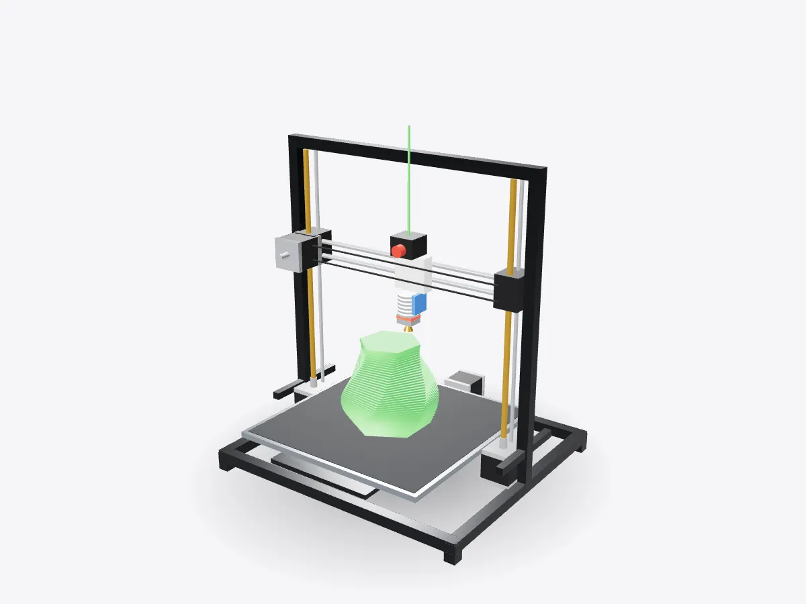

01 / 05
Overview
8 parts, one idea.
See how an FDM 3D printer works in 3D: frame, gantry, hotend, extruder, heated bed, belts and stepper motors. Watch a print build layer by layer.
Drag to orbit, pinch or scroll to zoom, tap any part.
How it works · Machines
Melt plastic, squeeze out a hair-thin line, repeat a few hundred times. An FDM printer is a very precise hot glue gun on a robot.

Scores are saved on this device only.
01 / 05
Overview
See how an FDM 3D printer works in 3D: frame, gantry, hotend, extruder, heated bed, belts and stepper motors. Watch a print build layer by layer.
Drag to orbit, pinch or scroll to zoom, tap any part.
02 / 05
Explode
Keep scrolling and every part slides away from the centre, so you can see how they fit together.
03 / 05
Slice
A section plane sweeps through the model as you scroll. Pick an axis and set the depth yourself.
04 / 05
Parts
Pick a part or tap a glowing dot. It lights up and everything else fades back.
05 / 05
Facts
S. Scott Crump filed the patent for fused deposition modelling; Stratasys owns the FDM trademark.
Fused filament fabrication is the generic name used by the open-source community.
The RepRap project set out to build a printer that could print many of its own parts.
Explained
A fused deposition modelling, or FDM, printer builds objects by laying down thin lines of molten plastic, one layer on top of another. The technique was patented by S. Scott Crump, whose company Stratasys owns the FDM trademark; hobbyists usually call it fused filament fabrication, or FFF. Almost every desktop 3D printer works this way, and the open-source RepRap project, started in 2005, helped make the machines cheap enough for homes and schools.
The plastic arrives as filament, a long strand wound on a spool. The extruder grips it with a toothed gear driven by a motor and pushes it into the hotend. Inside the hotend a heater block melts the plastic and a brass nozzle with a tiny opening squeezes it out as a thin, hot bead. The bead fuses to the layer underneath and cools in seconds. A heatsink and fan keep the upper part of the hotend cool so the filament only softens right at the nozzle, and a fan aimed at the print helps each line set before the next one arrives.
To draw each layer, the printer moves the nozzle relative to the bed in X and Y, then steps up in Z for the next layer. In the design shown here the print head runs left and right along the X gantry on a toothed belt, the heated bed slides forwards and backwards for Y, and two lead screws lift the whole gantry for Z. Other printers split the axes differently, for example by moving the bed down instead, but the principle is the same.
Every axis is driven by a stepper motor, which moves in small, equal steps rather than spinning freely. Because the controller knows how far one step moves each axis, it can position the nozzle precisely just by counting steps, without measuring where it is. Limit switches or sensors tell it where zero is when it starts up.
Before printing, a program called a slicer cuts the 3D model into hundreds of horizontal slices and works out a path for the nozzle on each one: outlines first, then a lightweight infill pattern inside. It saves those instructions as G-code, a simple list of moves and temperatures that the printer follows line by line. Press Print in play mode to watch the model build a twisted vase one layer at a time.
D3DDD
D3DDD makes them: product cutaways, exploded views, architectural renders and technical drawings.